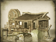
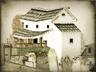

Requires
- Buildings: 
Enables
- Buildings: 
Basic Building Statistics (can be modified by difficulty level, arts, skills, traits and retainers)
- Cost: 3000
- +500 to wealth generated by trade in this province
- +1 to the initial rank of geisha recruited in this province
- +8 per turn to town growth from trade within this province
Clan Effects
- +3% to trade income (tariffs only)
Description
Crime does pay, and gold will wash away all stains.
A wise warrior uses the weapons to hand; given a spear, he does not ask for a sword. A nest of criminality might seem a source of trouble and discontent, but with "encouragement" it can be a well of gold. It can also be a training ground for intrigue and deception. The Tokugawa prohibitions on overseas contacts and trade kept out foreign influence, but they did not suppress the desire for foreign goods. Although trade with the Dutch was allowed at Nagasaki, it could not satisfy everyone. Where there is demand for the forbidden, there will be criminals. Once there are criminals, they will make money through criminality. Once the money flows it finds a way into many purses, and the boundaries between the shadows and the light become very blurred.